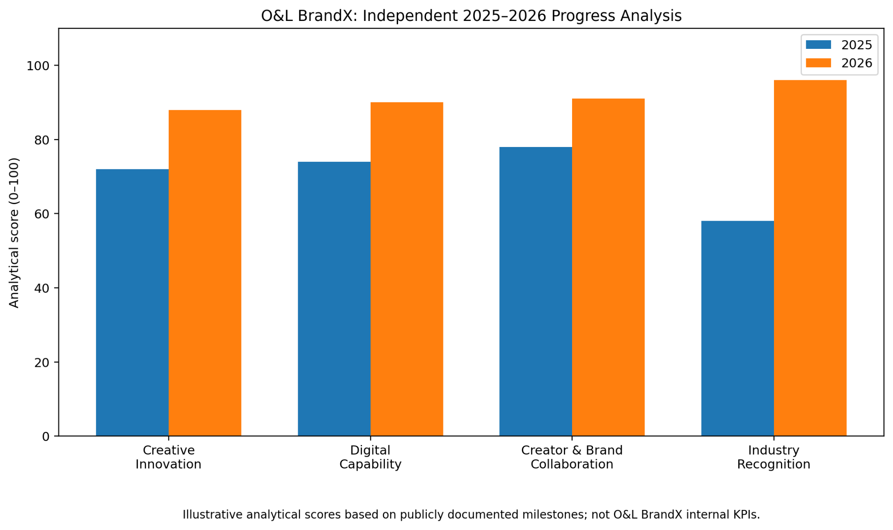
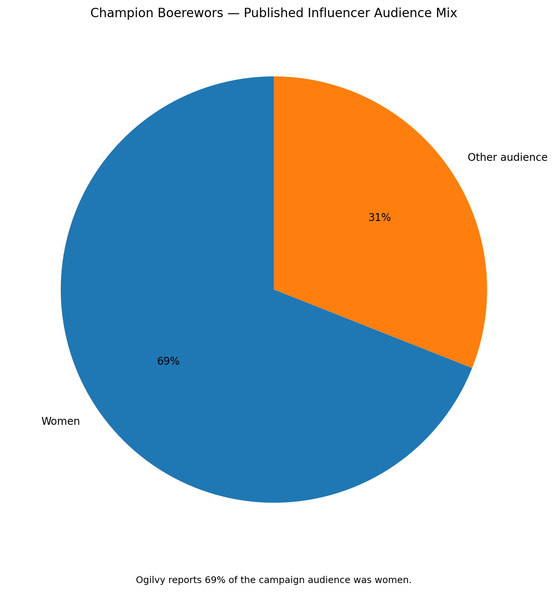
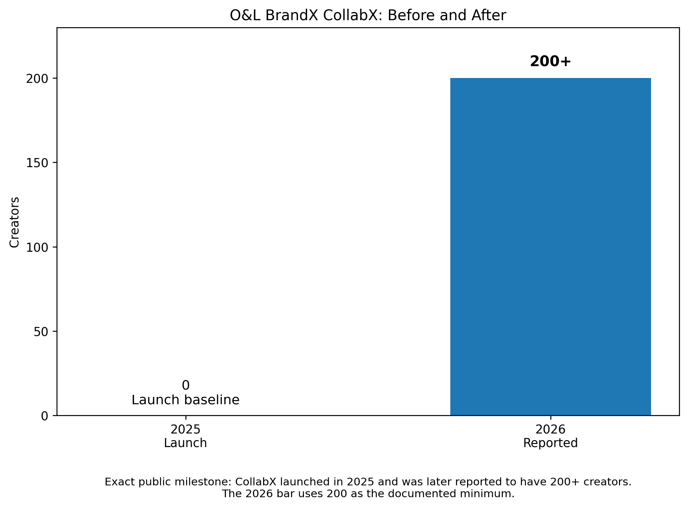
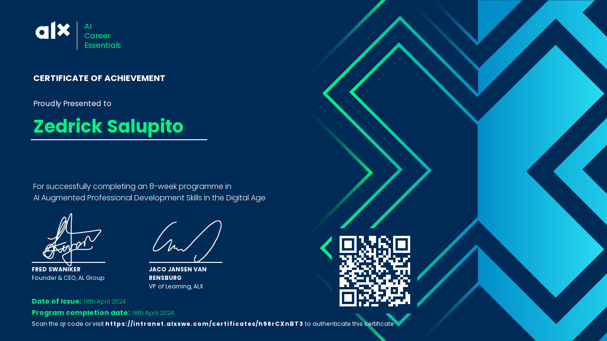
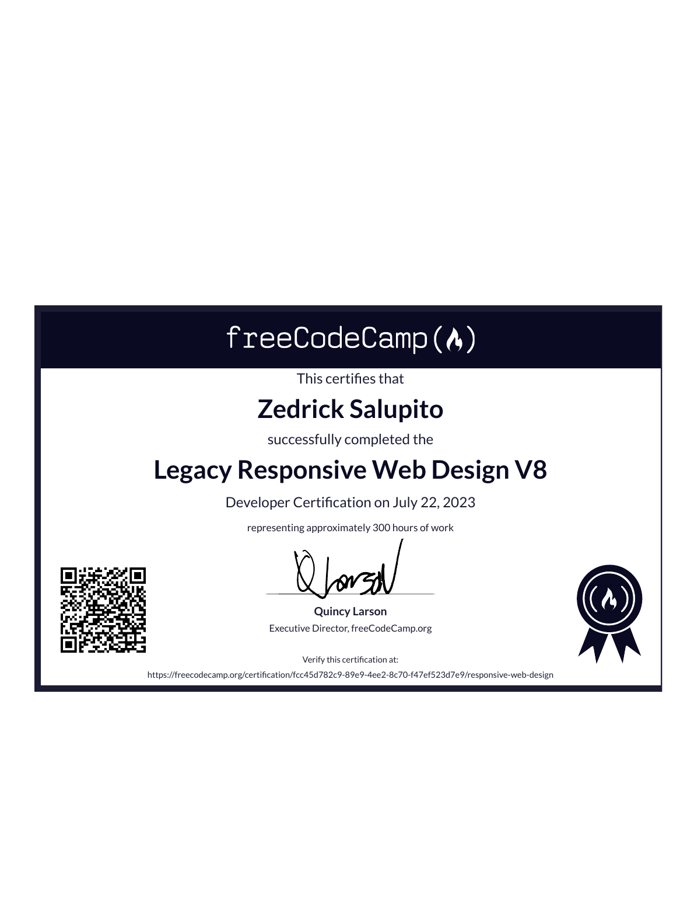
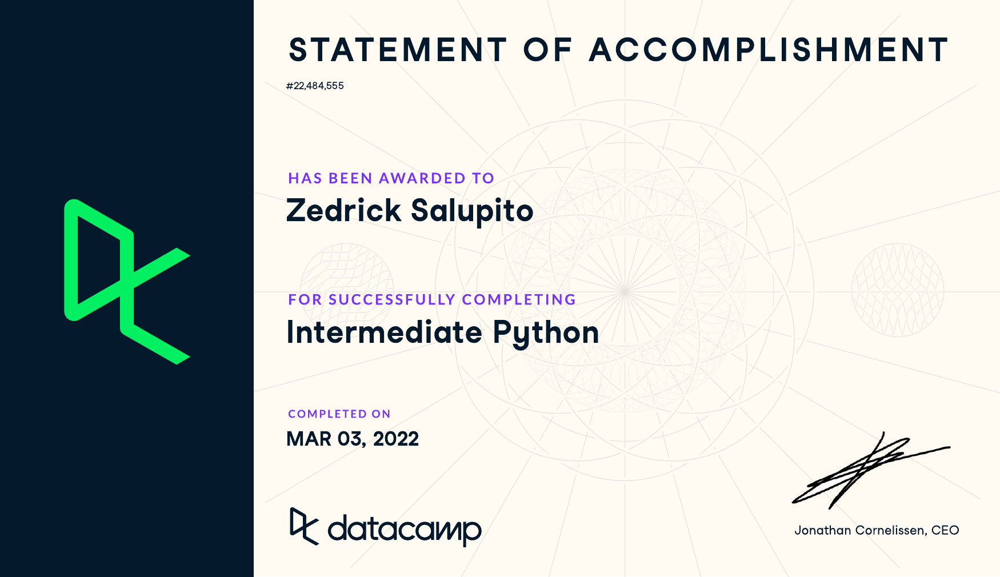
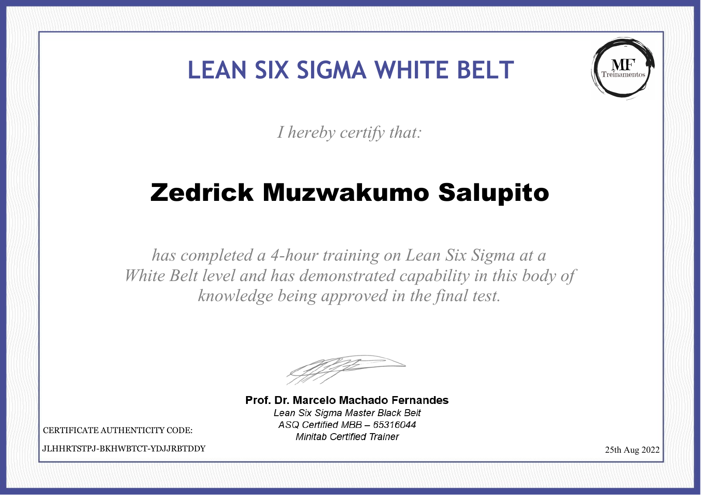
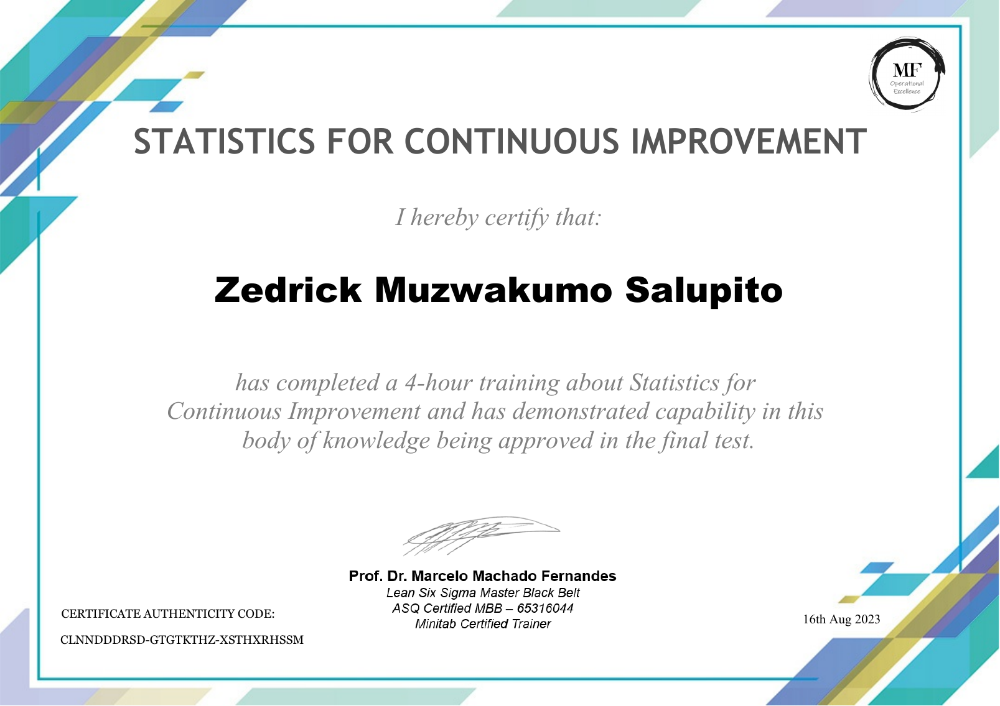
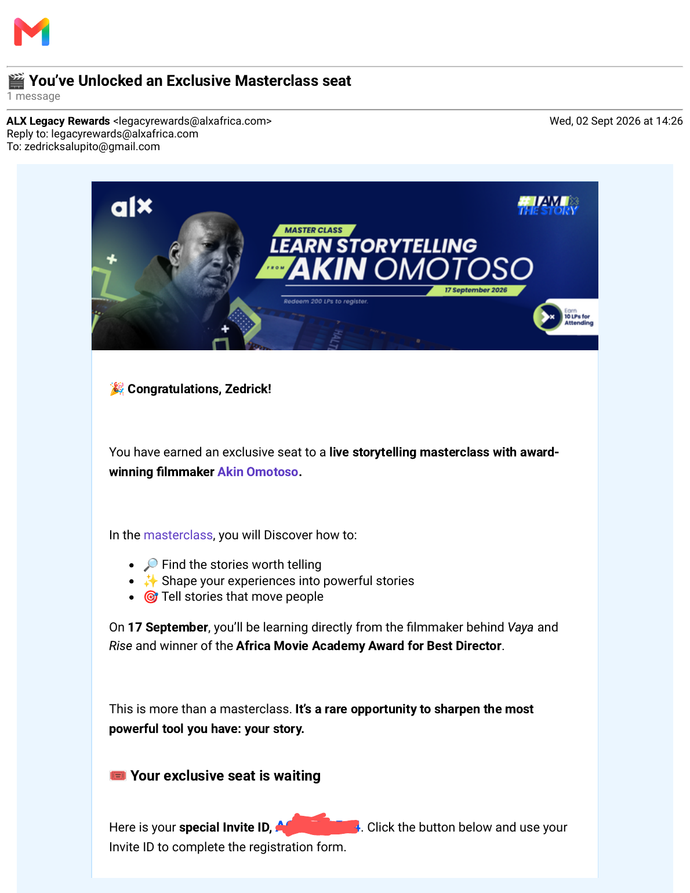

📊
Scattered performance data
Metrics live across platforms, dashboards and spreadsheets, making it difficult to tell one focused performance story.
I help small creative and digital marketing agencies turn campaign data into clear visual insights, persuasive case-study stories, data-backed content and video-led narratives that make client value easier to understand.
I’m Zedrick Salupito, an AI Career Essentials graduate and developing data analysis, visualisation and digital storytelling specialist. I combine data, design, web skills and communication to help creative and digital marketing agencies explain campaign performance with more clarity and stronger business context.
My ideal clients are small and mid-sized creative and digital marketing agencies, especially in Namibia and Southern Africa, that need clearer ways to translate campaign activity into client-ready evidence of outcomes.
Metrics live across platforms, dashboards and spreadsheets, making it difficult to tell one focused performance story.
Reach, clicks and engagement are reported, but the client still asks: “What did this change for the business?”
Agencies may have excellent creative output yet struggle to turn wins into compelling case studies that help win larger projects.
I help small creative agencies attract bigger clients by turning creative work into measurable business results through case-study positioning, data-backed content strategy and video-led storytelling.
Start with the client objective and identify the metrics that genuinely explain progress toward that outcome.
Turn complex or scattered performance information into clean comparisons, trends and client-ready visuals.
Connect the numbers to meaning: what changed, why it matters, and what should happen next.
A focused service mix combining analysis, visual communication and storytelling.
Structure reach, engagement, leads, conversions and growth into a report that answers the client’s business question.
→Use clear charts, comparisons and narrative context to transform results into evidence that can support client retention and pitches.
→Repurpose findings into short visual stories that make campaign insights easier to understand and share.
These examples demonstrate how I explore public or illustrative information and turn it into visual comparisons. Where noted, values are illustrative or based on documented public milestones rather than private company KPIs.

A before-and-after visual framework comparing creative innovation, digital capability, creator and brand collaboration, and industry recognition.

A simple part-to-whole visual showing a reported 69% women audience share versus 31% other audience, demonstrating how campaign audience composition can be made immediately understandable.

A milestone comparison showing a launch baseline and the later reported scale of 200+ creators, designed to translate a documented growth milestone into a clean visual story.
I use charts to support a decision, not decorate a report. Every visual should help answer what happened, why it matters and what the client should do next.
Use My Reporting ChecklistSelected visual work showing how I communicate campaign ideas, personal learning and creative progress across short-form and longer video formats.
Short-form visual storytelling around the question behind campaign metrics.
An animated comparison of reach, engagement, leads and conversions.
A compact data visualisation example designed around client-ready interpretation.
A direct-to-camera presentation demonstrating communication and storytelling practice.
A longer-form visual project showing experimentation with presentation and motion.
A short recognition clip celebrating completion of 100 Canva designs.
Certificates are presented here for viewing only. Each description explains how the learning connects to the work I offer creative and digital marketing agencies.

This ALX AI Career Essentials certificate represents my completion of an eight-week programme focused on AI-augmented professional development skills in the digital age. The programme strengthened how I approach research, problem-solving, communication, collaboration, critical thinking, and the practical use of artificial intelligence in professional workflows. For creative and digital marketing agencies, this foundation supports my ability to analyse information, identify patterns, communicate insights clearly, and combine technology with human judgement. It also reflects my commitment to continuous learning and responsible experimentation as I develop data visualisation, campaign reporting, storytelling, and client-focused solutions that turn complex information into practical business value.

My freeCodeCamp Legacy Responsive Web Design V8 Developer Certification represents approximately 300 hours of practical learning and project work completed in responsive web design. It demonstrates experience with the foundations used to structure and style accessible web pages across different screen sizes. This training supports my ability to present data, campaign insights, case studies, and lead-generation resources through clear digital experiences rather than static documents. For agencies, that means I can think beyond charts and reports toward how information is experienced online. The certification reflects persistence, self-directed learning, and a practical approach to building usable digital communication assets for clients.

My Intermediate Python statement of accomplishment reflects continued development of my programming and analytical capabilities. Python strengthens the way I approach structured data, repetitive tasks, calculations, logic, and the transformation of information into useful outputs. Within my data analysis and visualisation work, these skills support a systematic approach to cleaning information, exploring patterns, preparing metrics, and developing reproducible workflows. For creative and digital marketing agencies, this technical foundation helps me connect campaign questions with organised analysis rather than relying on visual presentation. The accomplishment demonstrates my willingness to keep developing technical skills that complement communication, design, and business-focused storytelling effectively.

My Lean Six Sigma White Belt certificate confirms completion of introductory training in Lean Six Sigma principles and continuous improvement. This foundation supports a disciplined way of looking at processes, identifying complexity, clarifying problems, and thinking about how work can become consistent and efficient. In campaign reporting, these ideas are useful because agencies need repeatable systems for collecting metrics, reviewing performance, spotting gaps, and communicating results. I apply this improvement mindset to the way I structure reporting workflows and client-facing insights. The certificate complements my data visualisation work by encouraging evidence-based thinking, process awareness, and problem definition before proposing solutions.

My Statistics for Continuous Improvement certificate represents focused training in using statistical thinking to support improvement and decision-making. Statistics is important in campaign analysis because numbers need context before they become meaningful insights. This training strengthens my appreciation for variation, comparison, measurement, and evidence when reviewing performance information. For creative and digital marketing agencies, that mindset helps me approach campaign metrics carefully, distinguishing useful signals from numbers that may look impressive without explaining business impact. Combined with data visualisation, Python, and reporting skills, this certificate supports my goal of turning performance
I help small creative and digital marketing agencies turn campaign data into clear visual insights, persuasive case-study stories, data-backed content and video-led narratives that make client value easier to understand.
I’m Zedrick Salupito, an AI Career Essentials graduate and developing data analysis, visualisation and digital storytelling specialist. I combine data, design, web skills and communication to help creative and digital marketing agencies explain campaign performance with more clarity and stronger business context.
My ideal clients are small and mid-sized creative and digital marketing agencies, especially in Namibia and Southern Africa, that need clearer ways to translate campaign activity into client-ready evidence of outcomes.
Metrics live across platforms, dashboards and spreadsheets, making it difficult to tell one focused performance story.
Reach, clicks and engagement are reported, but the client still asks: “What did this change for the business?”
Agencies may have excellent creative output yet struggle to turn wins into compelling case studies that help win larger projects.
I help small creative agencies attract bigger clients by turning creative work into measurable business results through case-study positioning, data-backed content strategy and video-led storytelling.
Start with the client objective and identify the metrics that genuinely explain progress toward that outcome.
Turn complex or scattered performance information into clean comparisons, trends and client-ready visuals.
Connect the numbers to meaning: what changed, why it matters, and what should happen next.
A focused service mix combining analysis, visual communication and storytelling.
Structure reach, engagement, leads, conversions and growth into a report that answers the client’s business question.
→Use clear charts, comparisons and narrative context to transform results into evidence that can support client retention and pitches.
→Repurpose findings into short visual stories that make campaign insights easier to understand and share.
These examples demonstrate how I explore public or illustrative information and turn it into visual comparisons. Where noted, values are illustrative or based on documented public milestones rather than private company KPIs.
A before-and-after visual framework comparing creative innovation, digital capability, creator and brand collaboration, and industry recognition.
A simple part-to-whole visual showing a reported 69% women audience share versus 31% other audience, demonstrating how campaign audience composition can be made immediately understandable.
A milestone comparison showing a launch baseline and the later reported scale of 200+ creators, designed to translate a documented growth milestone into a clean visual story.
I use charts to support a decision, not decorate a report. Every visual should help answer what happened, why it matters and what the client should do next.
Use My Reporting ChecklistSelected visual work showing how I communicate campaign ideas, personal learning and creative progress across short-form and longer video formats.
Short-form visual storytelling around the question behind campaign metrics.
An animated comparison of reach, engagement, leads and conversions.
A compact data visualisation example designed around client-ready interpretation.
A direct-to-camera presentation demonstrating communication and storytelling practice.
A longer-form visual project showing experimentation with presentation and motion.
A short recognition clip celebrating completion of 100 Canva designs.
Certificates are presented here for viewing only. Each description explains how the learning connects to the work I offer creative and digital marketing agencies.
This ALX AI Career Essentials certificate represents my completion of an eight-week programme focused on AI-augmented professional development skills in the digital age. The programme strengthened how I approach research, problem-solving, communication, collaboration, critical thinking, and the practical use of artificial intelligence in professional workflows. For creative and digital marketing agencies, this foundation supports my ability to analyse information, identify patterns, communicate insights clearly, and combine technology with human judgement. It also reflects my commitment to continuous learning and responsible experimentation as I develop data visualisation, campaign reporting, storytelling, and client-focused solutions that turn complex information into practical business value.
My freeCodeCamp Legacy Responsive Web Design V8 Developer Certification represents approximately 300 hours of practical learning and project work completed in responsive web design. It demonstrates experience with the foundations used to structure and style accessible web pages across different screen sizes. This training supports my ability to present data, campaign insights, case studies, and lead-generation resources through clear digital experiences rather than static documents. For agencies, that means I can think beyond charts and reports toward how information is experienced online. The certification reflects persistence, self-directed learning, and a practical approach to building usable digital communication assets for clients.
My Intermediate Python statement of accomplishment reflects continued development of my programming and analytical capabilities. Python strengthens the way I approach structured data, repetitive tasks, calculations, logic, and the transformation of information into useful outputs. Within my data analysis and visualisation work, these skills support a systematic approach to cleaning information, exploring patterns, preparing metrics, and developing reproducible workflows. For creative and digital marketing agencies, this technical foundation helps me connect campaign questions with organised analysis rather than relying on visual presentation. The accomplishment demonstrates my willingness to keep developing technical skills that complement communication, design, and business-focused storytelling effectively.
My Lean Six Sigma White Belt certificate confirms completion of introductory training in Lean Six Sigma principles and continuous improvement. This foundation supports a disciplined way of looking at processes, identifying complexity, clarifying problems, and thinking about how work can become consistent and efficient. In campaign reporting, these ideas are useful because agencies need repeatable systems for collecting metrics, reviewing performance, spotting gaps, and communicating results. I apply this improvement mindset to the way I structure reporting workflows and client-facing insights. The certificate complements my data visualisation work by encouraging evidence-based thinking, process awareness, and problem definition before proposing solutions.
My Statistics for Continuous Improvement certificate represents focused training in using statistical thinking to support improvement and decision-making. Statistics is important in campaign analysis because numbers need context before they become meaningful insights. This training strengthens my appreciation for variation, comparison, measurement, and evidence when reviewing performance information. For creative and digital marketing agencies, that mindset helps me approach campaign metrics carefully, distinguishing useful signals from numbers that may look impressive without explaining business impact. Combined with data visualisation, Python, and reporting skills, this certificate supports my goal of turning performance data into clear, responsible, client-ready stories that guide actions.

This is a professional-development invitation rather than a completion certificate. ALX Legacy Rewards awarded me an exclusive seat for a live storytelling masterclass with filmmaker Akin Omotoso. I include it because storytelling directly supports my goal of turning campaign evidence into narratives that move beyond reporting numbers and help clients understand why the results matter.
A practical resource for creative and marketing agencies that want to connect visibility, engagement, leads, conversions and customer growth to a clearer client story.
The download unlocks only after a successful form submission.
Connect with me directly or explore my professional profiles.
Follow my work, portfolio updates, learning journey and data storytelling projects.
Visit My Main Portfolio →